この実用的な codelab は、Android 開発者基礎 (バージョン2) コースの Unit 1:はじめに の一部です。このコースを最大限に活用するには、以下の Codelabs を順に進めます。
- このコースの Codelabs 一覧は Codelabs for Android Developer Fundamentals (V2) を参照してください。
- コースの詳細については、Android Developer Fundamentals (Version 2)を参照してください。チャプターのコンセプト、アプリケーション、スライドを含んでいます。
注: このコースでは、codelab と practical (実習) を同じような意味で使います。
はじめに
この実習では、Android 開発環境である Android Studio のインストール方法を学習します。また、最初のAndroidアプリである Hello World をエミュレータと物理デバイス上で作成して実行します。
すでに知っているべきこと
以下のことは、すでに知っていることと想定します:
- Android Studio などの IDE (統合開発環境)を使用したオブジェクト指向アプリケーションの一般的なソフトウェア開発プロセスを理解していること。
- Java プログラミング言語に重点を置いたオブジェクト指向プログラミングの経験が少なくとも1~3年あること。(以下の実習では、オブジェクト指向プログラミングや Java 言語については説明しません。)
必要になること
- Windows または Linux を実行しているコンピュータ、または macOS を実行している Mac が必要です。最新のシステム要件については、Android Studio のダウンロードページを参照してください。
- インターネットへのアクセス、または最新の Android Studio とJava をコンピュータにインストールして読み込む他の手段。
この実習で学ぶこと
- Android Studio IDE をインストールして使用する方法
- Android アプリを構築するための開発プロセスの使用方法
- テンプレートからAndroidプロジェクトを作成する方法
- デバッグのためにアプリにログメッセージを追加する方法
今後すること
- 開発環境である Android Studio をインストールします。
- コンピュータ上でアプリケーションを実行するエミュレータ(仮想デバイス)を作成します。
- Hello World アプリケーションを作成し、仮想デバイスと物理デバイスで実行します。
- プロジェクトのレイアウトについて調査します。
- アプリケーションからログメッセージを生成して表示します。
-
AndroidManifest.xmlファイルを調べます。
Android Studio を正常にインストールしたら、テンプレートから Hello World アプリ用の新規プロジェクトを作成します。このシンプルなアプリは、Android の仮想または物理デバイスの画面に文字列 "Hello World" を表示します。
完成したアプリは次のようになります。

Android Studio は完全な統合開発環境 (IDE) であり、高度なコードエディタや一連のアプリ用のテンプレートを含みます。さらに、開発、デバッグ、テスト、およびパフォーマンスのためのツールが含まれているため、アプリケーションの開発が迅速かつ容易になります。設定済みの幅広いエミュレータを使ってアプリをテストしたり、自分のモバイルデバイスでアプリをビルドしたり、Google Play ストアで公開したりできます。
注: Android Studioは継続的に改善されています。システム要件およびインストール手順の最新情報については、Android Studio を参照してください。
Android Studio は、Windows または Linux を実行しているコンピュータ、および macOS を実行している Mac で使用できます。最新の OpenJDK (Java開発キット) は、Android Studio にバンドルされています。
Android Studio を起動して実行するには、まずシステム要件をチェックして、システムが要件を満たしていることを確認します。インストールはすべてのプラットフォームで同様です。違いについては以下を参照してください。
- Android開発者サイトに移動し、指示に従ってAndroid Studio をダウンロードしてインストールします。
- すべての手順のデフォルト設定を受け入れ、すべてのコンポーネントがインストール対象として選択されていることを確認します。
- インストールが完了すると、セットアップウィザード(Setup Wizard)が Android SDK などの追加コンポーネントをダウンロードしてインストールします。インターネットの速度によっては時間がかかる場合があり、手順の一部が冗長に見える場合があります。
- ダウンロードが完了すると Android Studio が起動し、最初のプロジェクトを作成する準備が整います。
トラブルシューティング : インストール中に問題が発生した場合は、Android Studio のリリースノートを確認するか、インストラクタからヘルプを入手してください。
このタスクでは、Hello World を表示するアプリケーションを作成して、Android Studio が正しくインストールされていることを確認し、Android Studio を使用した開発の基本を学びます。
2.1 アプリのプロジェクトを作成する
- Android Studio をまだ開いていない場合は開きます。
- メインの Welcome to Android Studio ウィンドウで、Start a new Android Studio project をクリックします。
- Create Android Project ウィンドウで、アプリケーション名として Hello World と入力します。
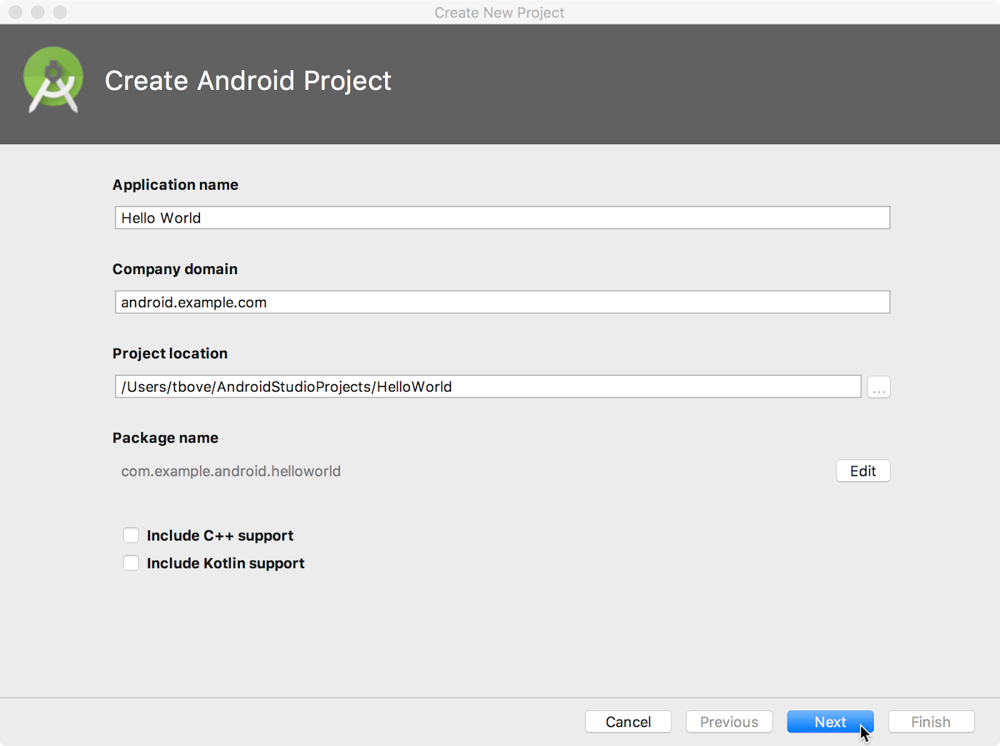
4. プロジェクトを保存するデフォルトの場所が Hello World アプリや他の Android Studio プロジェクトを保存する場所であることを確認するか、または任意のディレクトリに変更します。
5. Company Domain としてデフォルトの android.example.com を受け入れるか、一意のドメインを作成します。
アプリを公開する予定がない場合は、デフォルトを受け入れることができます。後でアプリケーションのパッケージ名を変更するのは余分な作業です。
6. Include C++ support (C++ サポートを含める) オプションと、Include Kotlin support (Kotlinサポートを含める) オプションはオフのままにし、Next をクリックします。
7. Target Android Devices (ターゲットAndroidデバイス) 画面で、Phone と Tablet (電話とタブレット) が選択されている必要があります。API 15: Android 4.0.3 IceCreamSandwich が Minimal SDK (最小のSDK)として設定されていることを確認します。そうでない場合は、ポップアップメニューを使用して設定します。
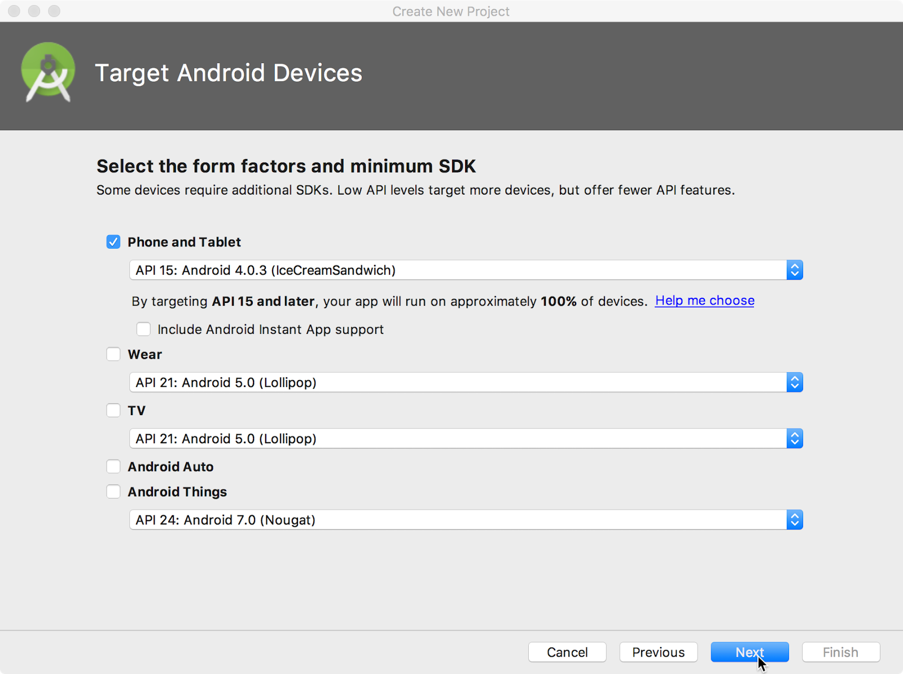
これらは、このコースのレッスンで使用する設定です。この記事を書いている時点では、これらの設定によって Hello World アプリは Google Play Store の 97% の Android デバイスと互換性があります。
8. Include Instant App support (Instant Appサポートを含める) および他のすべてのオプションはオフのままにします。Next をクリックします。選択したターゲット SDK の追加コンポーネントがプロジェクトに必要な場合は、Android Studio によって自動的にインストールされます。
9. Add an Activity (アクティビティの追加) ウィンドウが表示されます。Activity は、ユーザーが実行できる 1 つのフォーカスされたものです。これは Android アプリの重要なコンポーネントであり、Activity には通常、UI 要素が画面上でどのように表示されるかを定義するレイアウトが関連付けられています。Android Studio には、使い始めに役立つ Activity テンプレートが用意されています。Hello World プロジェクトの場合は、次に示すように Empty Activity (空の Activity) を選択し、Next をクリックします。
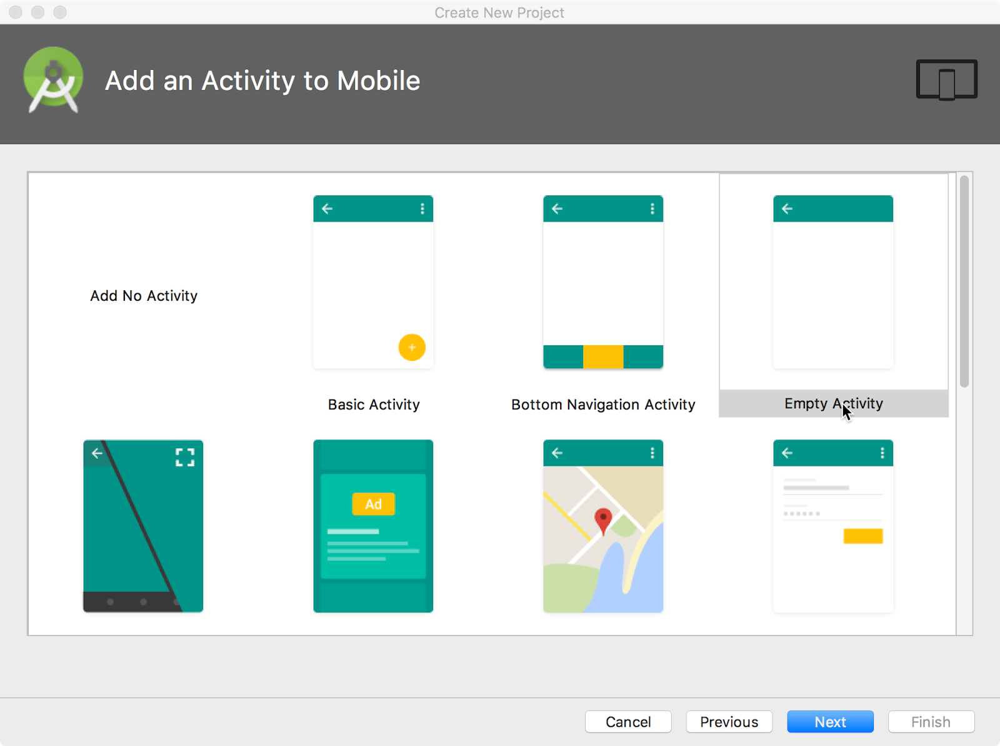
10. Configure Activity (アクティビティの構成) 画面が表示されます。これは、前の手順で選択したテンプレートによって異なります。デフォルトでは、テンプレートで提供される空の Activity の名前は MainActivity です。この設定は必要に応じて変更できますが、このレッスンでは MainActivity を使用します。
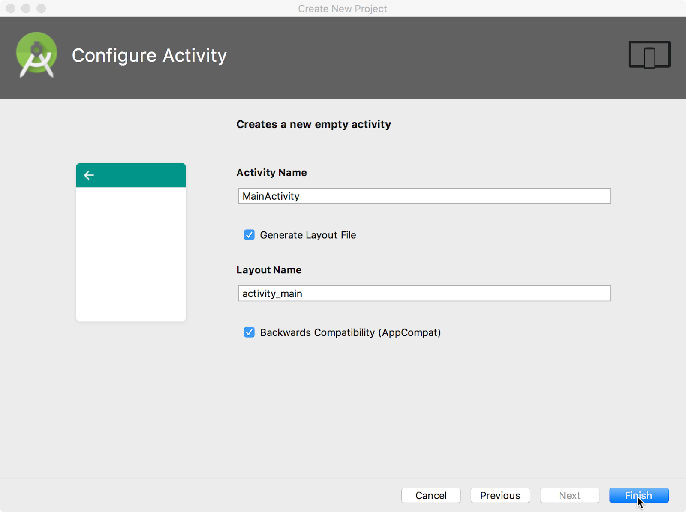
11. Generate Layout file (レイアウトファイルを生成) オプションがチェックされていることを確認します。デフォルトのレイアウト名は activity_main です。これは必要に応じて変更できますが、このレッスンでは activity_main を使用します。
12. Backwards Compatibility (App Compat)(アプリケーションCompat) オプションがチェックされていることを確認します。これにより、アプリが以前のバージョンの Android と後方互換性を持つようになる。
13. Finish (完了) をクリックします。
Android Studio はプロジェクト用のフォルダを作成し、Gradle を使ってプロジェクトをビルドします(しばらく時間がかかる場合があります)。
ヒント: 詳細については、Configure your build の開発者ページを参照してください。
キーボードショートカットやその他の便利なヒントが記載された"Tip of the day" (今日のヒント) というメッセージが表示される場合もあります。Close をクリックしてメッセージを閉じます。
Android Studio エディタが表示されます。次の手順に従います。
- activity_main.xml タブをクリックして、レイアウトエディタを表示します。
- まだ選択されていない場合は、レイアウトエディタの Design タブをクリックして、次に示すようなレイアウトのグラフィカル・レンディションを表示します。
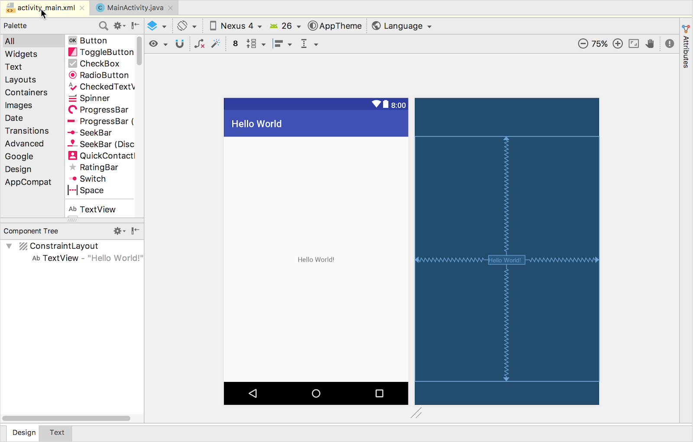
3. MainActivity.java タブをクリックして、次のようなコードエディタを表示します。
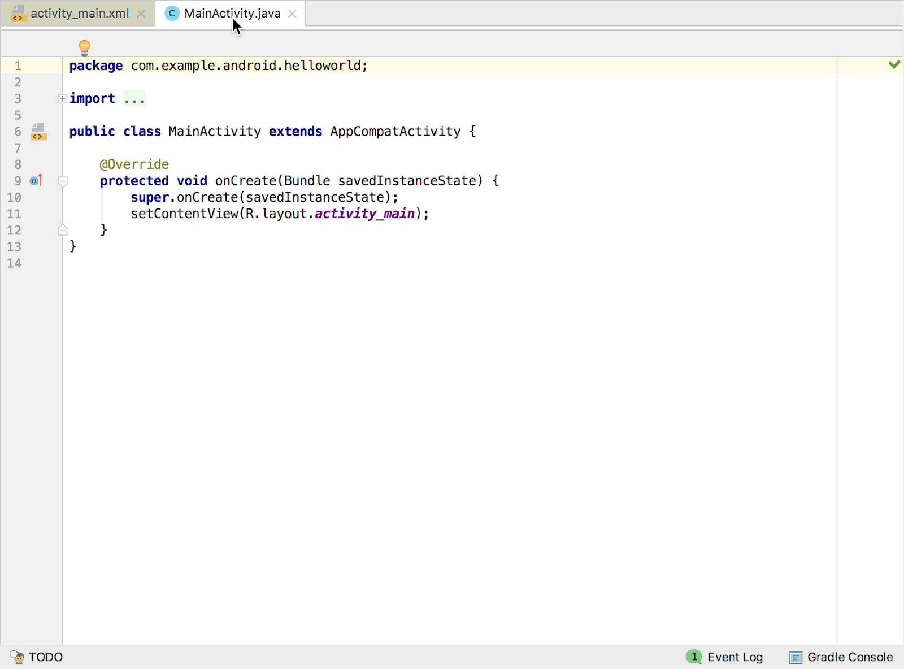
2.2 Project > Android を詳しくみる
この実習では、Android Studioでプロジェクトがどのように構成されているかを調べます。
- プロジェクトのタブが選択されていない場合は、Android Studio ウィンドウの左側にあるプロジェクトのタブをクリックすると、プロジェクトペインが表示されます。
- 標準の Android プロジェクトの階層でプロジェクトを表示するには、次に示すように、プロジェクト pane のポップアップメニューから Android を選択します。
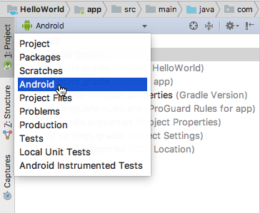
(注) この章およびその他の章では、プロジェクトの pane が Android に設定されている場合、Project > Android pane と表記します。
2.3 Gradle Scripts フォルダを詳しくみる
Android Studio の Gradle ビルドシステムでは、外部バイナリやその他のライブラリモジュールを依存関係としてビルドに含めることが簡単にできます。
最初に App プロジェクトを作成すると、Project > Android pane が表示され、下に示すように Gradle Scripts フォルダが展開されます。
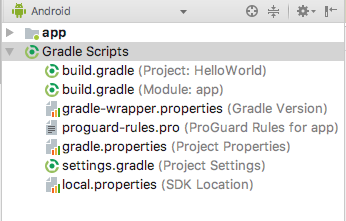
次の手順に従って、Gradle のシステムを操作します。
- Gradle Scripts フォルダが展開されていない場合は、三角形をクリックして展開します。
このフォルダには、構築システムに必要なすべてのファイルが含まれています。
- build.gradle (Project: HelloWorld) ファイルを探します。
ここには、プロジェクトを構成するすべてのモジュールに共通の構成オプションがあります。すべての Android Studio プロジェクトには、単一の最上位レベルの Gradle ビルドファイルが含まれている。多くの場合、このファイルに変更を加える必要はありませんが、内容を理解しておくと役に立つことがあります。
デフォルトでは、最上位レベルの構築ファイルは、buildscript ブロックを使用して、Gradle リポジトリとプロジェクト内のすべてのモジュールに共通する依存関係を定義します。依存関係がローカルライブラリやファイルツリー以外のものである場合、Gradle はこのファイルの repositories ブロックで指定されているオンラインリポジトリ内のファイルを探します。デフォルトでは、新しい Android Studio プロジェクトは JCenter と Google (Google Maven リポジトリが含む)をリポジトリの場所として宣言します。
allprojects {
repositories {
google()
jcenter()
}
}
3. build.gradle (Module:app) を見てください。
プロジェクトレベルの build.gradle ファイルに加えて、各モジュールには独自の build.gradle ファイルがあります。このファイルを使用すると、(HelloWorld アプリケーションにはモジュールが1つしかありませんが) 特定のモジュール ごとにビルド設定を構成できます。これらのビルド設定を構成すると、追加のビルドの種類や製品の種類など、カスタムパッケージのオプションを提供できます。AndroidManifest.xml ファイルまたは最上位の build.gradle ファイルの設定をオーバーライドすることもできます。
このファイルは、dependencies で依存性を宣言するときなど、アプリケーションレベルの設定を変更するときに編集するファイルです。ライブラリの依存関係は、いくつかの異なfる依存関係設定のいずれかを使用して宣言できます。依存関係の設定ごとに、ライブラリの使用方法に関するさまざまな指示がGradleに提供されます。たとえば、implementation fileTree(dir: 'libs', include: ['*.jar']) は、libs ディレクトリ内のすべての .jar ファイルの依存関係を追加します。
HelloWorld アプリケーションの build.gradle (Module:app) を次に示します。
apply plugin: 'com.android.application'
android {
compileSdkVersion 26
defaultConfig {
applicationId "com.example.android.helloworld"
minSdkVersion 15
targetSdkVersion 26
versionCode 1
versionName "1.0"
testInstrumentationRunner
"android.support.test.runner.AndroidJUnitRunner"
}
buildTypes {
release {
minifyEnabled false
proguardFiles
getDefaultProguardFile('proguard-android.txt'),
'proguard-rules.pro'
}
}
}
dependencies {
implementation fileTree(dir: 'libs', include: ['*.jar'])
implementation 'com.android.support:appcompat-v7:26.1.0'
implementation
'com.android.support.constraint:constraint-layout:1.0.2'
testImplementation 'junit:junit:4.12'
androidTestImplementation 'com.android.support.test:runner:1.0.1'
androidTestImplementation
'com.android.support.test.espresso:espresso-core:3.0.1'
}
4. 三角形をクリックして、Gradle スクリプトを閉じます。
2.4 app フォルダと res フォルダを詳しくみる
アプリケーションのすべてのコードとリソースは、app フォルダと res フォルダにあります。
- app フォルダ、java フォルダ、および com.example.android.helloworld フォルダを展開し、MainActivity の java ファイルを表示します。ファイルをダブルクリックすると、コードエディタで開きます。
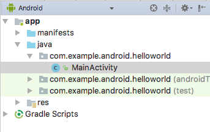
java フォルダには、上の図に示すように、3 つのサブフォルダに Java クラスファイルが含まれています。com.example.hello.helloworld (または指定したドメイン名) のフォルダには、アプリケーションパッケージのすべてのファイルが含まれています。他の 2 つのフォルダはテストに使用し、別のレッスンで説明します。Hello World アプリはパッケージが 1 つしかなく、MainActivity.java が含まれています。ユーザーに最初に表示される Activity (screen) の名前は、通常 MainActivity と呼ばれています(Project>Android ではファイル拡張子が省略されています)。
- res フォルダと layout フォルダを展開し、activity_main.xml ファイルをダブルクリックしてレイアウトエディタで開きます。
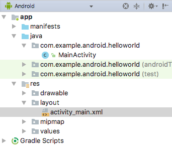
res フォルダには、レイアウト、文字列、イメージなどのリソースが格納されます。アクティビティは通常、XML ファイルとして定義された UI ビューのレイアウトに関連付けられます。通常、このファイルの名前は Activity に基づいて付けられます。
2.5 manifests フォルダを詳しくみる
manifests フォルダには、あなたのアプリに関する重要な情報を Android システムに提供するファイルが含まれており、アプリのコードを実行する前にシステムが必要な情報が入っています。
- 目録フォルダを展開します。
- AndroidManifest.xml ファイルを開きます。
AndroidManifest.xml ファイルには、Android アプリケーションのすべてのコンポーネントが記述されています。各アクティビティなど、アプリケーションのすべてのコンポーネントは、この XML ファイルで宣言する必要があります。他のコースレッスンでは、このファイルを修正してフィーチャとフィーチャの権限を追加します。概要については、App Manifest Overview を参照してください。
このタスクでは、Android Virtual Device (AVD) Manager を使用して、特定の種類の Android デバイスの構成をシミュレートする仮想デバイス(エミュレータ)を作成し、その仮想デバイスを使用してアプリケーションを実行します。Android エミュレータには、Android Studio の基本的なシステム要件以外にも追加の要件があります。
AVD Manager を使用して、デバイスのハードウェア特性、API レベル、ストレージ、スキン、およびその他のプロパティを定義し、仮想デバイスとして保存します。仮想デバイスを使用すると、物理デバイスを使用せずに、API レベルが異なるさまざまなデバイス構成(タブレットや携帯電話など)でアプリケーションをテストできます。
3.1 Android 仮想デバイス (AVD) を作成する
コンピュータ上でエミュレータを実行するには、仮想デバイスを記述する構成を作成する必要があります。
- Android Studioで、Tools > Android > AVD Manager を選択するか、ツールバーの AVD Maneger アイコンをクリックします。Your Virtual Devices (ご自身の仮想デバイス) の画面が表示されます。すでに仮想デバイスを作成している場合は、画面に(下図のように)と表示されます。そうでなければ、空のリストが表示されます。
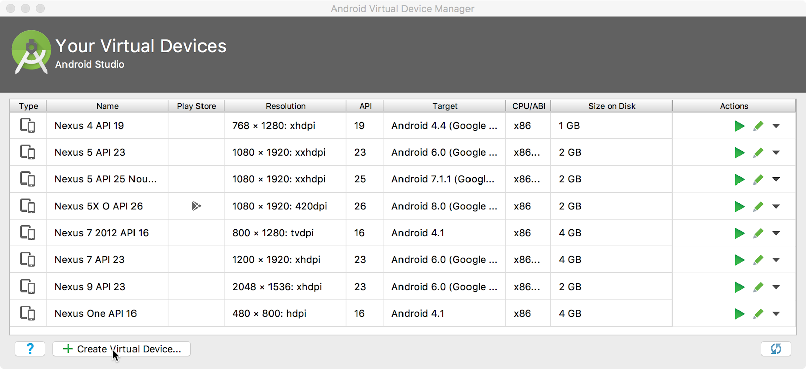
- + Create Virtual Device (仮想デバイスを作成) をクリックします。Select Hardware (ハードウェアの選択) ウィンドウが表示され、設定済みのハードウェアデバイスのリストが表示されます。各デバイスの対角表示サイズ (サイズ) 、ピクセル単位の画面解像度 (解像度) 、およびピクセル密度 (密度) がテーブルに列で表示されます。
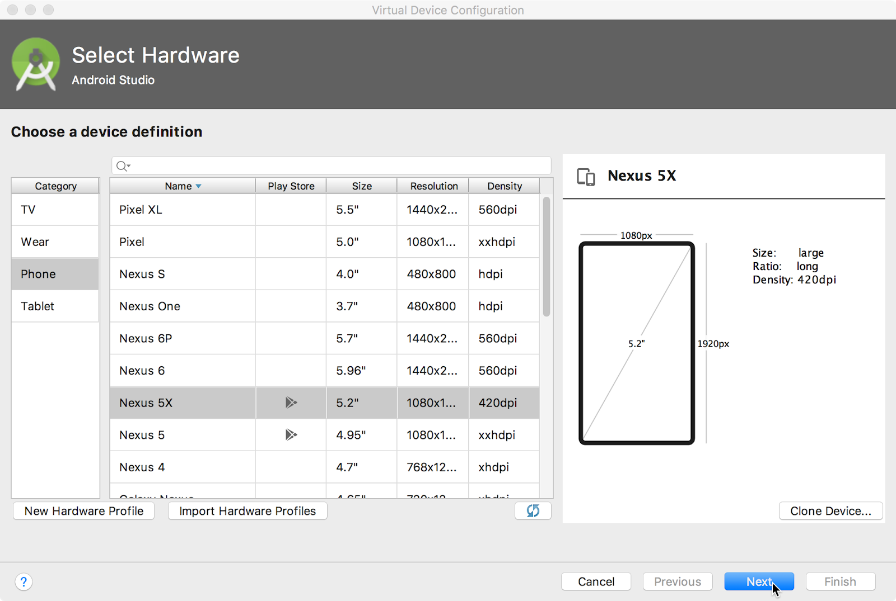
- Nexus 5x または Pixel XL などのデバイスを選択し、Next をクリックします。System Image (システムのイメージ) 画面が表示されます。
- Recommended (推奨) タブが選択されていない場合はクリックし、仮想デバイスで実行するAndroid システムのバージョンを選択します ( Oreo など)。
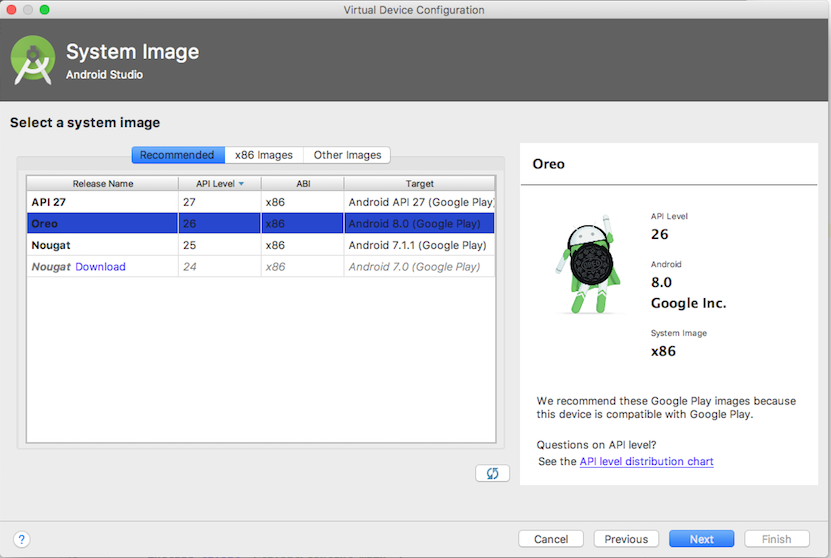
推奨タブに表示されるバージョンよりも多くのバージョンがあります。x86 Images タブと Other Images タブを確認します。
使用するシステムイメージの横に Download リンクが表示されている場合は、まだインストールされていません。リンクをクリックしてダウンロードを開始し、完了したら 完了 をクリックします。
- システムイメージを選択したら、次へをクリックします。Android Virtual Device (AVD) ウィンドウが表示されます。AVDの名前を変更することもできます。構成を確認し、 完了をクリックします。
3.2 仮想デバイス上でアプリケーションを実行する
このタスクでは、最後にHello Worldアプリケーションを実行します。
- Android Studioで、Run > Run を選択するか、ツールバーの Run アイコンをクリックします。
- Select Deployment Target (開発ターゲットの選択) ウィンドウの Available Virtual Devices (利用可能な仮想デバイス) で、作成した仮想デバイスを選択し、 OK をクリックします。
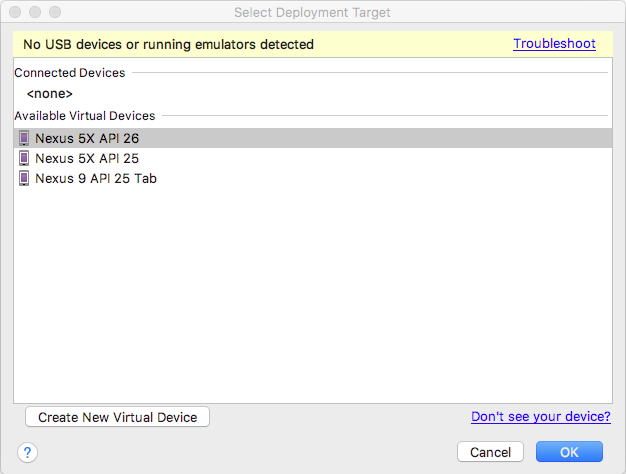
エミュレータが起動し、物理デバイスと同じように起動します。コンピュータの速度によっては、この処理に時間がかかる場合があります。アプリがビルドされ、エミュレータの準備ができると、Android Studio はアプリをエミュレータにアップロードして実行します。
次の図のような Hello World アプリケーションが表示されます。
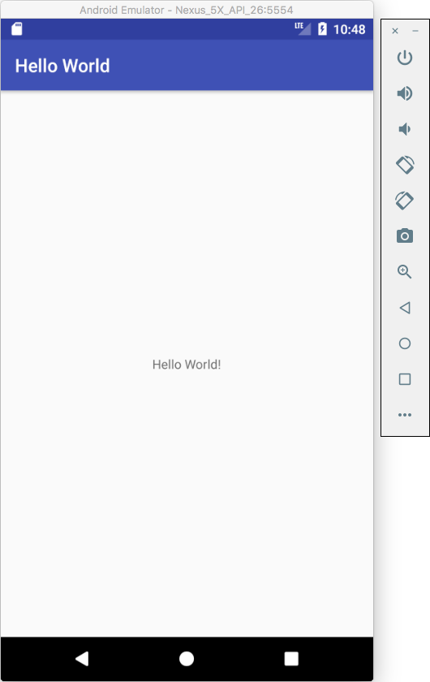
(ヒント) 仮想デバイスでテストする場合は、セッションの最初に仮想デバイスを 1 回だけ起動することをお勧めします。アプリのテストが終わるまでアプリを閉じてはいけません。仮想デバイスを閉じるには、エミュレータの上部にある X ボタンをクリックするか、メニューから終了を選択するか、Windows では Ctrl を押しながら Q を、macOS では Command キーを押しながら Q を押します。
この最後のタスクでは、スマートフォンやタブレットなどの物理的なモバイルデバイスでアプリケーションを実行します。アプリケーションは、常に仮想デバイスと物理デバイスの両方でテストする必要があります。
必要なもの:
- 携帯電話やタブレットなどの Android デバイス
- USB ポート経由で Android デバイスをコンピュータに接続するためのケーブル
Linux または Windows システムを使用している場合は、ハードウェアデバイスでを実行するために追加の手順を実行する必要があります。Using Hardware Devices documentation を参照してください。デバイスに適した USB ドライバをインストールする必要がある場合もあります。Windows ベースのUSB ドライバーについては、OEM USB Drivers を参照してください。
4.1 USBデバッグを有効にする
Android Studio がデバイスと通信できるようにするには、Android デバイスで USB Debugging をオンにする必要があります。これは、ご自身のデバイス上の開発者用オプションの設定で有効になります。
Android 4.2 以降では、開発者オプション画面はデフォルトで非表示になっています。開発者オプションを表示してUSB デバッグを有効にするには、次の手順に従います。
デバイスで設定を開き、About phone を検索してクリックして、Build number を 7 回タップします。
前の画面(設定/システム)に戻ります。開発者オプションがリストに表示されます。開発者用オプション をタップします。
USB Debugging を選択します。
4.2 デバイス上でアプリケーションを実行する
Android Studio からデバイスを接続してアプリを実行できるようになりました。
デバイスを USB ケーブルで開発マシンに接続します。
ツールバーの実行ボタンか Android Studio の実行アイコンをクリックします。Select Deployment Target ウィンドウが開き、使用可能なエミュレータと接続されているデバイスのリストが表示されます。
デバイスを選択し、OK をクリックします。
Android Studio はアプリをデバイスにインストールして実行します。
トラブルシューティング
Android Studioがデバイスを認識しない場合は、次の操作を試してください。
デバイスのプラグを抜いて再プラグします。
Android Studio を再起動します。
それでもデバイスが見つからないか、デバイスが unauthorized と宣言されている場合は、次の手順を実行します。
デバイスを取り外します。
デバイスで、設定アプリの開発者オプションを開きます。
Revoke USB Debugging authorizations (USBデバッグ認証の取り消し) をタップします。
デバイスをコンピュータに再接続します。
プロンプトが表示されたら、承認を許可します。
デバイスに適した USB ドライバをインストールする必要がある場合があります。Using Hardware Devices ドキュメントを参照してください。
このタスクでは、build.gradle (Module:app) ファイル内のアプリケーション構成を変更し、変更内容をAndroid Studioプロジェクトに同期する方法を学びます。
5.1 アプリケーションの最小 SDK バージョンを変更する
次の手順に従います。
- Gradle Scriptsフォルダが開いていない場合は展開し、build.gradle (Module:app) ファイルをダブルクリックします。
ファイルの内容がコードエディタに表示されます。
- 次に示すように、defaultConfig ブロック内で、minSdkVersion の値を 17 に変更します(最初は15 に設定されていました)。
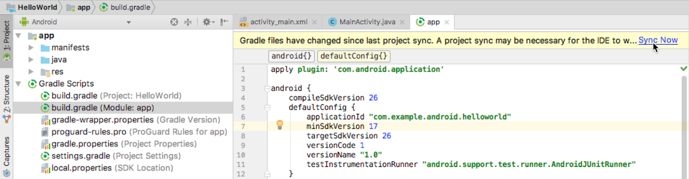
コードエディタの上部に通知バーが表示され、 Sync Now(今すぐ同期)のリンクが表示されます。
5.2 新しい Gradle 設定の同期
プロジェクト内のビルド設定ファイルを変更する場合、Android Studio はビルド設定の変更をインポートし、ビルドエラーが発生しないことを確認するためのチェックを実行できるように、プロジェクトファイルの同期を要求します。
プロジェクトファイルを同期するには、(前の図のように) 変更時に表示される通知バーをクリックするか、ツールバーのプロジェクトをグラドルファイルと同期アイコンをクリックします。
Gradle の同期が完了すると、Android Studio ウィンドウの左下隅に Gradle build finished (Gradle ビルド終了)というメッセージが表示されます。
Gradle の詳細については、Build System Overview と Configuring Gradle Builds のドキュメントを参照してください。
このタスクでは、Logcat にメッセージを表示する Log ステートメントをアプリケーションに追加します。ログメッセージは、値、実行パス、およびレポート例外のチェックに使用できる強力なデバッグツールです。
6.1 Logcat を表示する
Logcatペインを表示するには、次の図に示すように、Android Studioウィンドウの下部にあるLogcatタブをクリックします。
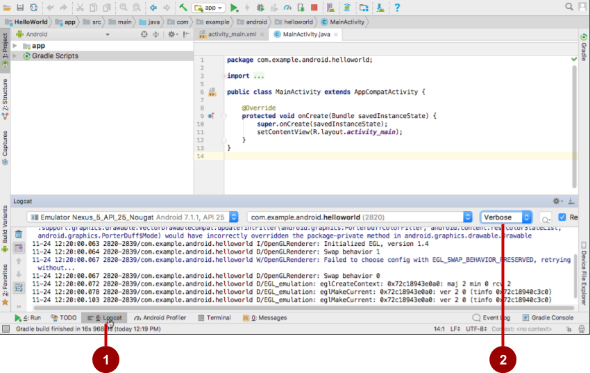
上の図では、次のようになります。
- Logcat タブは、Logcat パネルを開いたり閉じたりするためのタブで、実行中のアプリケーションに関する情報が表示されます。アプリケーションに Log 文を追加すると、ここにログメッセージが表示されます。
- Log level のメニューを Verbose (デフォルト) に設定すると、すべての Log メッセージが表示されます。その他の設定には Debug(デバッグ)、Error(エラー)、Info(情報)、Warn(警告) があります。
6.2 アプリケーションにログの文を追加する
アプリケーションコードのログの文は、Logcat メッセージを表示します。たとえば、次のようになります。
Log.d("MainActivity", "Hello World");
メッセージの部分は次のとおりです。
- Log: Logcat にログメッセージを送信するためのLogクラス
- d: ログメッセージをフィルタするデバッグログレベルの設定が Logcat に表示されます。その他のログレベルは、エラーの場合は e、警告の場合は w、情報の場合は i です。
"MainActivity": 最初の引数は、Logcat のメッセージをフィルタリングするために使用できるタグです。これは通常、メッセージの発信元である Activity の名前です。ただし、デバッグに役立つ任意のものを作成できます。
慣例により、ログのタグは Activity の定数として定義されます。
private static final String LOG_TAG = MainActivity.class.getSimpleName();
"Hello world": 2 番目の引数は実際のメッセージです。
次の手順に従います。
- Android Studio で Hello World アプリを開き、MainActivity を開きます。
- 曖昧さのないインポートをプロジェクトに自動的に追加するには (たとえば android.util.Log は Log を使用するために必要)、Windows で File > Settings を選択するか、macOS で Android Studio > Preferences を選択します。
- を選択します。すべてのチェックボックスをオンにし、 貼り付け時にインポートを挿入 (Insert imports on paste) をすべて (All) に設定します。
- 適用をクリックし、OK をクリックします。
- MainActivity の onCreate () メソッドに、次の文を追加します。
Log.d("MainActivity", "Hello World");
onCreate () メソッドは次のコードのようになります。
@Override
protected void onCreate(Bundle savedInstanceState) {
super.onCreate(savedInstanceState);
setContentView(R.layout.activity_main);
Log.d("MainActivity", "Hello World");
}
- Logcat が開いていない場合は、Android Studio の下部にある Logcat タブをクリックして開きます。
- ターゲットの名前とアプリケーションのパッケージ名が正しいことを確認します。
- Logcat でログのレベルを Debug に変更します(または、ログメッセージが非常に少ないようであれば、Verbose のままにします。)。
- アプリケーションを実行します。
Logcat に次のメッセージが表示されます。
11-24 14:06:59.001 4696-4696/? D/MainActivity: Hello World
(注) コーディングの課題はすべて任意であり、以降のレッスンの前提条件ではありません。
チャレンジ: 基本的な開発ワークフローを理解したので、次の手順を実行します。
- Android Studio をインストールするには、Android Studio に移動し、指示に従ってダウンロードしてインストールします。
- 新しいアプリケーションを作成するときは、API 15:Android 4.0.3 IceCreamSandwich がMinimum SDK として設定されていることを確認します。
- アプリケーションの Android 階層をプロジェクトのパネルに表示するには、プロジェクトのタブをクリックし、ポップアップメニューの上の方にある Android を選択します。
- プロジェクトに新しいライブラリを追加したり、ライブラリのバージョンを変更する必要がある場合は、build.gradle (Module:app) のファイルを編集します。
- アプリケーションのすべてのコードとリソースは、app フォルダと res フォルダにあります。java フォルダには、Java ソースコード内のアクティビティー、テスト、およびその他のコンポーネントが含まれます。res フォルダには、レイアウト、文字列、イメージなどのリソースが格納されます。
- AndroidManifest.xml ファイルを編集して、機能コンポーネントおよび権限を Android アプリケーションに追加します。複数のアクティビティなど、アプリケーションのすべてのコンポーネントは、この XML ファイルで宣言する必要があります。
- Android Virtual Device (AVD) Manager を使用して、アプリケーションを実行するための仮想デバイス(エミュレータ)を作成します。
- デバッグ用の基本ツールとしてLogcat にメッセージを表示する Log ステートメントをアプリケーションに追加します。
- Android Studio を使用して物理的な Android デバイスでアプリケーションを実行するには、デバイスで USB デバッグをオンにします。Settings > About phone と開き、Build number を 7 回タップします。前の画面 (設定) に戻り、開発者用オプションをタップします。USB Debugging を選択します。
関連するコンセプトは 1.0:Introduction to Android と 1.1 Your first Android app にあります。
このセクションでは、講師が指導するコースの一部として、このコードラボで学習している学生のために考えられる宿題をリストします。次の操作は、インストラクターが行います。
- 必要に応じて宿題を割り当てます。
- 宿題の提出方法を生徒に伝える。
- 宿題を採点しなさい。
インストラクターは、これらの提案を必要なだけ、または必要なだけ使用できます。また、適切と思われる他の宿題を自由に割り当てることができます。
このコードラボを独力で学習している場合は、これらの宿題を使って知識をテストしてみてください。
アプリケーションの構築と実行
- 空のテンプレートから新しいAndroidプロジェクトを作成します。
- メイン・アクティビティーの onCreate () に、さまざまなログ・レベルのロギング・ステートメントを追加します。
- 好きなバージョンの Android をターゲットにしてデバイスのエミュレータを作成し、アプリを実行します。
- Logcat でフィルタリングを使用してログ・ステートメントを検索し、デバッグまたはエラー・ロギング・ステートメントのみを表示するようにレベルを調整します。
以下の質問に答えてください
問１
メインアクティビティのレイアウトファイルの名前は何ですか?
MainActivity.javaAndroidManifest.xmlactivity_main.xmlbuild.gradle
問２
アプリケーションの名前を指定する文字列リソースの名前は何ですか?
app_namexmlns:appandroid:nameapplicationId
問３
新しいエミュレータを作成するには、どのツールを使用しますか。
- Android Device Monitor
- AVD Manager
- SDK Manager
- Theme Editor
問４
アプリケーションに次のログステートメントが含まれているとします。
Log.i("MainActivity", "MainActivity layout is complete");
ログレベルメニューが次のどれに設定されている場合、Logcat に "MainActivity layout is complete"(MainActivityのレイアウトが完了)という文が表示されますか。(ヒント:複数回答可)
- Verbose
- Debug
- Info
- Warn
- Error
- Assert
採点のためにアプリを提出する
アプリケーションに次のものがあることを確認します。
- 画面に "Hello World" と表示されるアクティビティ。
- メイン・アクティビティのonCreate() にステートメントを記録します。
- Logcat のログレベルには、デバッグまたはエラーロギング文だけが表示されます。
Android Developer Fundamentals (V2) コースの次の実用的なコードを見つけるには、Codelabs for Android Developer Fundamentals (V2) を参照してください。
章立て、アプリ、スライドへのリンクを含む概要については、Android Developer Fundamentals (Version 2) を参照してください。